IT support has two connected jobs
Support teams need to manage service providers, clients, resources and tickets; end users need a clear way to solve recurring IT problems without getting lost in support terminology.
PRODUCT DESIGN CASE STUDY / IT SELF-SERVICE & SUPPORT OPERATIONS
Designing a self-service and service-operations experience that connects support knowledge, guided troubleshooting, service-provider administration and operational visibility.
FixFinder is represented in the supplied screens as an IT support platform for organizations and service providers. It combines an operations dashboard, service-provider and application/resource records, ticket-oriented views and a visual Wizard Builder for creating guided troubleshooting paths. The most distinctive design problem is how to turn support knowledge into a structured, navigable and maintainable self-service journey.
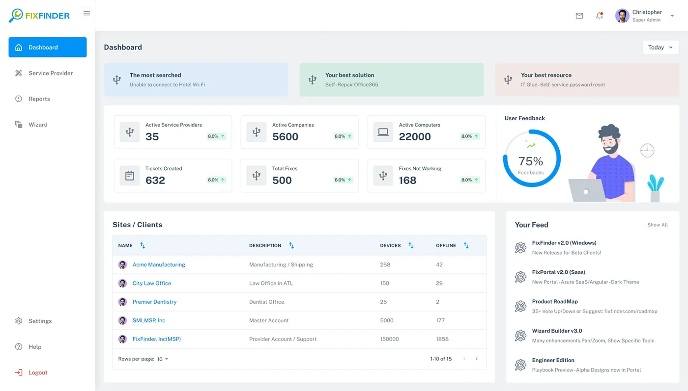
Project evidence: The uploaded archive contains 15 interface exports. It does not include a project brief, research records, delivery dates, team structure, source Figma library, code or deployment evidence. Role, scope and project history should be confirmed before publishing as factual employment claims.
FixFinder brings service operations and knowledge-led support into a single platform. The UX challenge is to make the operational overview useful to administrators while making complex troubleshooting paths easier to author and follow.
Support teams need to manage service providers, clients, resources and tickets; end users need a clear way to solve recurring IT problems without getting lost in support terminology.
Structure an admin experience for operational visibility and a Wizard Builder for turning support knowledge into step-by-step decision paths.
Work across dashboard hierarchy, tabular administration, content/resource records, branching flows, wizard configuration, preview and publishing affordances.
The supplied screens document the dashboard, provider/application/resource views, operations lists, ticketing and a multi-panel wizard authoring experience.
Outcome boundary: The result describes the available design artifacts. The archive does not establish that the flows were deployed, that support tickets were deflected, or that resolution time improved.
The interface evidence points to two user contexts: administrators overseeing the service ecosystem, and support-content authors building guided resolutions that end users can follow.
Provider, company, computer, ticket and fix information should be visible in a coherent dashboard, with clear paths to the underlying records.
Support knowledge needs to be organized into topics, questions, answers, solutions, resources and feedback—not buried in unstructured documents.
A person with an IT issue needs a relevant question, understandable choices and a specific solution or resource, with a route to human support when self-service is not enough.
Authors and administrators need a way to edit, reorder, preview, save and publish guided content while preserving the branching structure.
The screens show a broad product surface. MoSCoW helps distinguish the minimum service-management and knowledge-authoring capabilities from workflow enhancements that can follow.
Without these, the platform cannot expose service context or deliver a guided self-service knowledge path.
These support administration, content maintenance and quality control as the number of records and flows grows.
Potential improvements to investigate after the core authoring and resolution tasks are validated.
Proposed non-goals based on the visible product scope, not a confirmed product-owner decision.
MoSCoW status: Reconstructed from the supplied screens as a portfolio prioritization model. It is not represented as an approved backlog or workshop result.
A service platform needs research with the people who administer it and the people who use self-service guidance. The archive contains UI screens, not interviews, analytics or usability studies, so this section separates visible evidence from research questions.
Map how administrators find a client/provider, inspect records, review support activity and maintain the resource/application catalogue.
Proposed research methodReview how common issues are currently documented, how troubleshooting decisions branch and where answers, resources or human escalation are needed.
Screen-based design framingObserve whether employees can recognize their issue, understand each question, choose the correct path and complete a recommended fix.
Proposed validation| Observed screen evidence | UX interpretation | Design opportunity | Evidence status |
|---|---|---|---|
| Dashboard surfaces most searched issue, best solution and best resource. | Search and knowledge performance are intended to be visible to administrators. | Make top demand signals actionable and connect them to underlying content records. | Visible in UI |
| Dashboard includes providers, companies, computers, tickets, fixes and feedback. | Operational health is represented through a set of service ecosystem indicators. | Define each metric, its timeframe and the destination behind the card. | Visible in UI |
| Wizard screen offers Add Topic, Add Question, Add Answer, Add Solution, Add Resource and Add Feedback. | Support knowledge is modeled as structured content units. | Make content types and their parent-child relationships clear. | Visible in UI |
| Wizard builder shows a branching conversation map and test/publish actions. | Authors need to reason about the full decision path, not only individual content cards. | Support an overview canvas, edit detail, preview and controlled publishing. | Visible in UI |
| Wizard editor presents a tree, central editing area and preview panel. | Authors need navigation, editing and end-user preview in one workspace. | Coordinate selection across tree, editor and preview. | Visible in UI |
| Operations list supports adding child content, editing, deleting, reordering and saving. | Content authoring requires hierarchy management and draft control. | Clarify hierarchy, destructive actions, unsaved changes and save/publish states. | Visible in UI |
Research integrity: No participant profiles, interview notes, ticket analytics, task observations, affinity maps or usability-test results were included. Do not present the interpretations above as direct user findings. Add actual evidence if you have it.
The visible workflows imply at least three task-based user archetypes: an administrator managing the service ecosystem, a content author building the wizard, and an employee seeking help. These are proto-archetypes inferred from the interface.
Job: monitor providers, clients, assets and service performance.
“Give me a clear picture of the service environment and let me reach the record that needs attention.”
Job: convert recurring support issues into guided instructions.
“Help me build a troubleshooting path that makes sense to an employee, and let me review it before publishing.”
Job: solve a common IT problem with minimal delay.
“I know what is not working. Ask me simple questions and guide me to a fix I can follow.”
Validate role boundaries, permissions, terminology, content ownership and the actual employee-facing self-service UI with real administrators, authors and employees.
The journey connects the dashboard and wizard authoring model with the intended employee self-service experience. The employee-facing path is inferred from the wizard content and flow examples; the archive does not include a full end-user runtime walkthrough.
This is a service journey hypothesis connecting the available admin/authoring screens to their intended end-user purpose. Validate the employee-facing runtime and feedback loop before presenting them as delivered product behavior.
The interface suggests two connected product domains: manage the service ecosystem, and build or maintain self-service knowledge. Keeping those domains distinct gives each user a clearer working context.
IA scope: This hierarchy is reconstructed from visible screen labels and navigation. It is not a verified production sitemap; confirm module access, role permissions and the exact relationship between applications, resources, tickets and wizard content.
The platform has two important flow families: employees following a decision tree, and authors creating that tree. The builder screens are the strongest evidence in this archive.
Search or open support topic.
Choose the relevant problem.
Answer guided question.
Follow relevant branch.
Try the recommended fix.
Rate or request support.
The decision-tree example includes website access, employee help, issue-type questions and password-related branches. A full deployed employee runtime was not included.
Open or create a wizard.
Create the root category.
Model the diagnostic step.
Write a response.
Add guidance and links.
Set branches and choices.
Check and publish.
The supplied Operations List, Wizard Editor, Configuration, Content, Tree and Flow Builder screens support these authoring concepts.
Review service overview.
Open relevant directory.
Locate a record.
Review record detail.
Update or remove record.
The Service Providers and resource/application tables show search, pagination and view/edit/delete patterns. Permission and confirmation rules should be validated.
A strong product case study makes the reasoning visible. These decisions are grounded in the interface patterns shown in the archive and identify where validation is still needed.
| Decision | User / product need | Design response visible in screens | Trade-off / QA consideration |
|---|---|---|---|
| Separate dashboard from authoring | Admins need oversight; authors need focused content-editing space. | Dashboard overview and dedicated Wizard Builder/editor surfaces. | Keep navigation consistent without mixing operational metrics into the authoring canvas. |
| Use a visual decision-tree builder | Authors need to understand branching logic and relationships. | Canvas with connected question, answer and issue-choice nodes. | Large trees need minimap, search, zoom, validation and clear orphan-node handling. |
| Pair tree navigation with focused editing | Authors need both the full hierarchy and the selected node's editable content. | Tree panel, central editor and right-side preview. | Selection synchronization, panel resizing and responsive fallback must be predictable. |
| Provide a live preview | Authors need to understand how content will appear to the end user. | Preview panel with the current question and Next action. | Preview must reflect branch logic, empty states and device contexts—not only text styling. |
| Make content types explicit | Topic, question, answer, solution, resource and feedback play different roles. | Dedicated Add Topic/Question/Answer/Solution/Resource/Feedback actions. | Prevent invalid nesting and explain required fields and dependencies. |
| Separate save draft and publish | Authors need safe iteration before content becomes available. | Save as Draft, Save Wizard and Publish controls appear in the authoring surfaces. | Clarify draft versus live version, unsaved changes, rollback and approval rules. |
| Keep records table-based | Administrators need to compare records and manage many entries. | Searchable/sortable paginated tables and card/list views. | Define empty/loading/error states, bulk actions and role-based permissions. |
The walkthrough follows the platform structure: operations overview, service records, then the Wizard Builder's increasingly detailed authoring surfaces.
The dashboard combines operational KPIs with “most searched,” “best solution,” “best resource,” client/device data and a product feed. This establishes both service oversight and content-performance context.
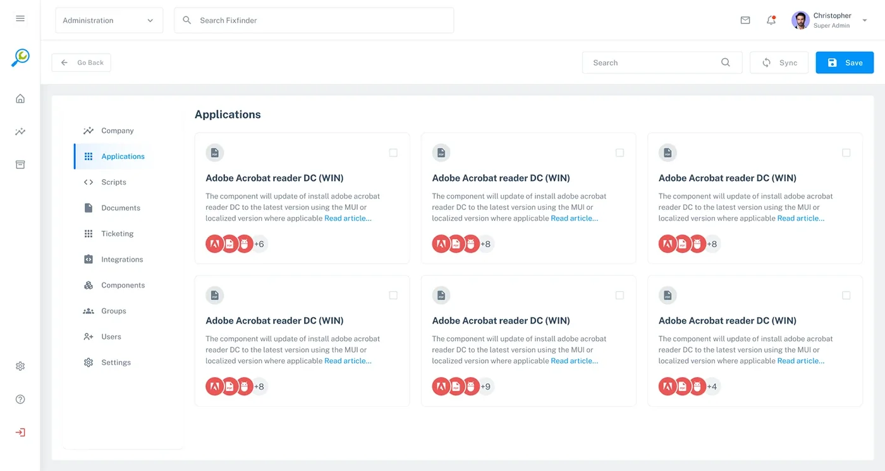
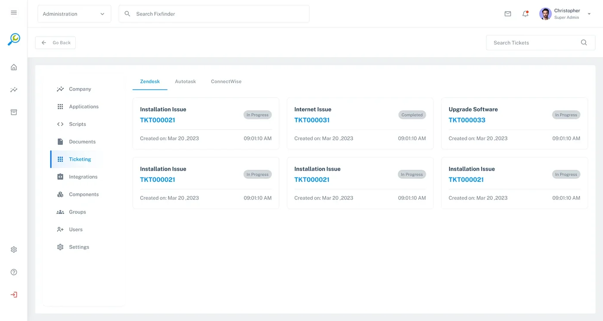
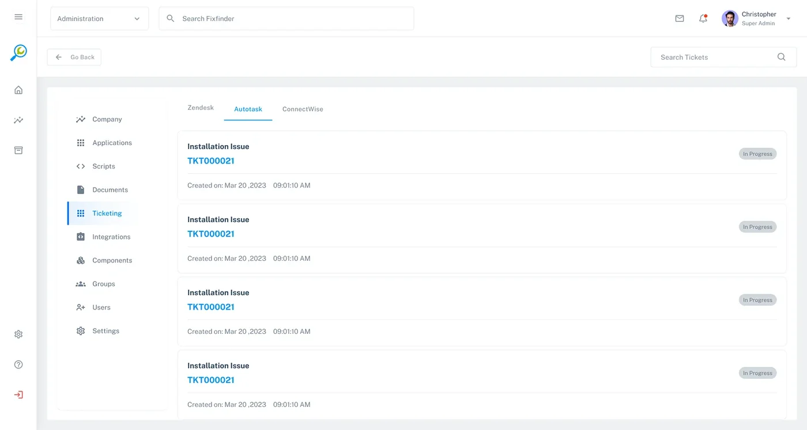
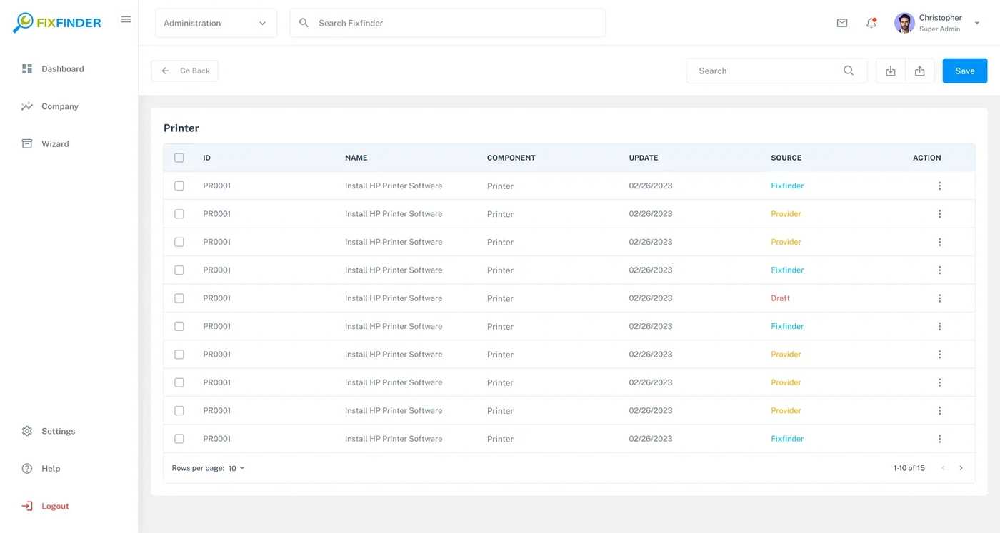
The archive shows both card-based and table-based directory patterns. The design opportunity is to align search, sorting, status, record actions and pagination so administrators do not relearn basic behaviors in each module.
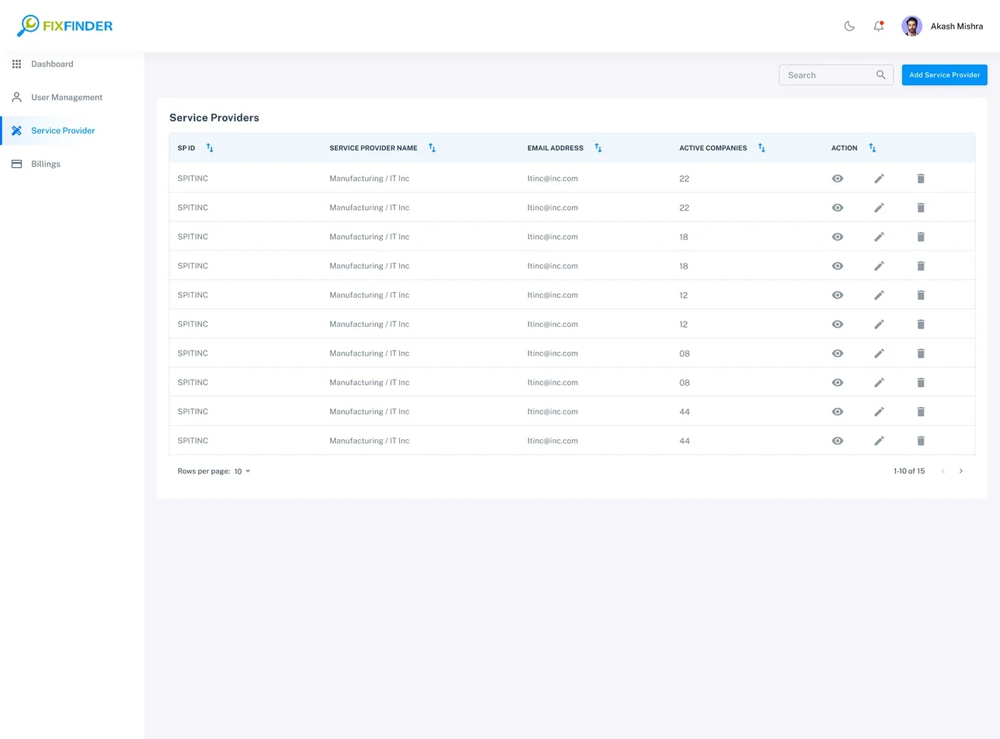
The provider listing shows organization/provider records, active company counts and view/edit/delete actions. The screenshots include different navigation variants, so confirm whether these represent different roles, product areas or design iterations before describing the access model.
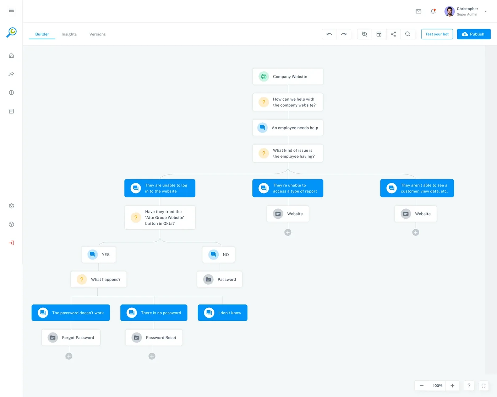
The flow canvas makes the support decision structure visible: a root context, diagnostic questions, branch choices and solution destinations. It changes the authoring task from maintaining a flat document into modeling a navigable support conversation.
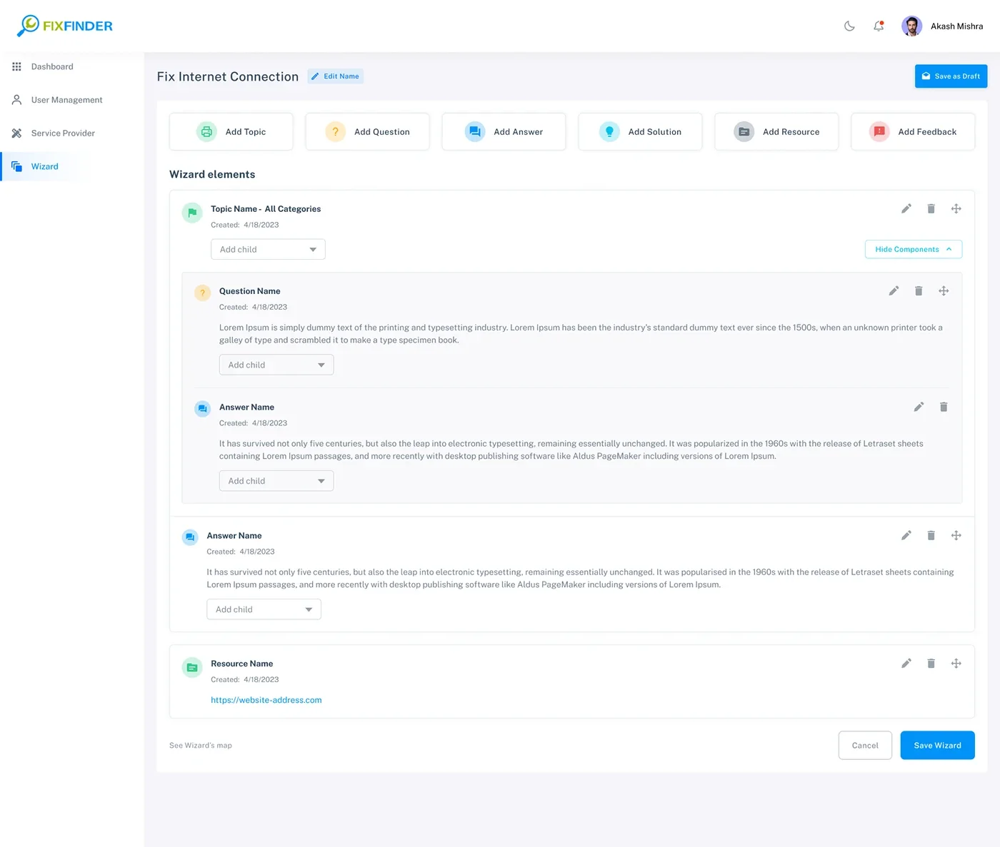
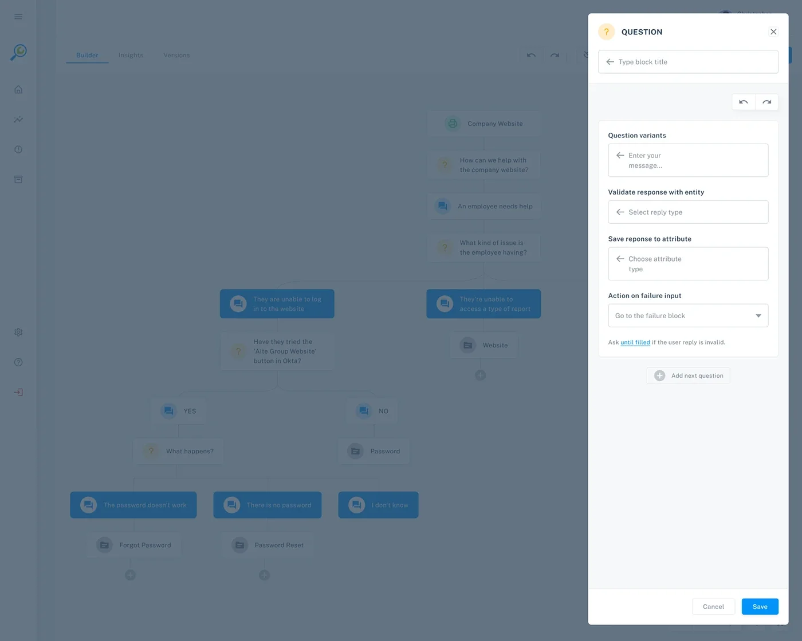
The list view exposes the content types and nesting controls. The editor shows a canvas with a configuration side panel, offering another way to work with the same guided flow.
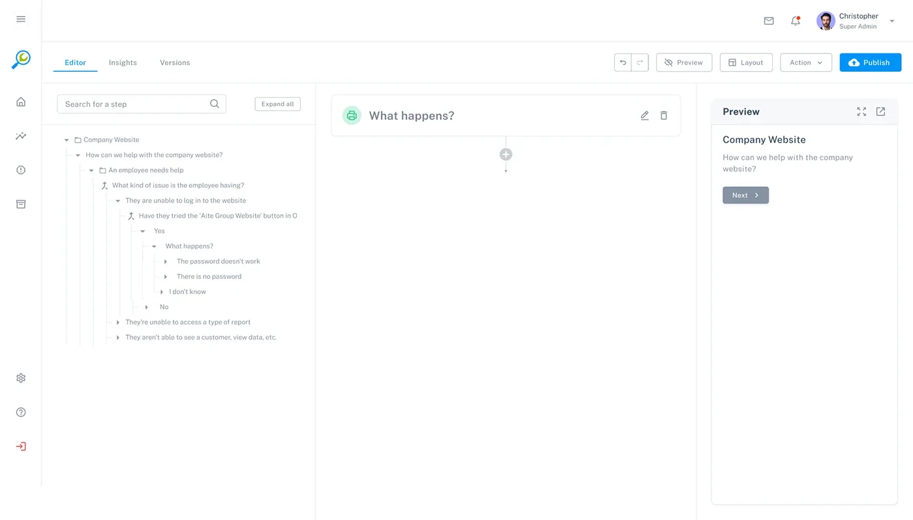
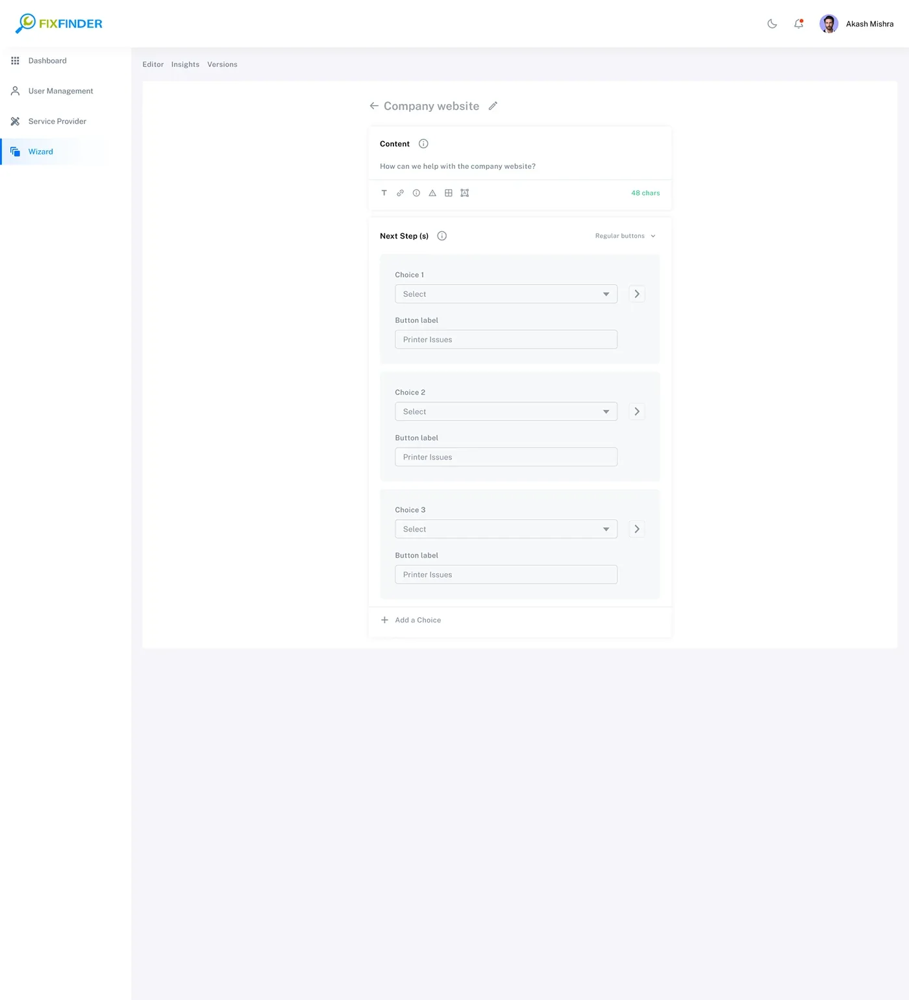
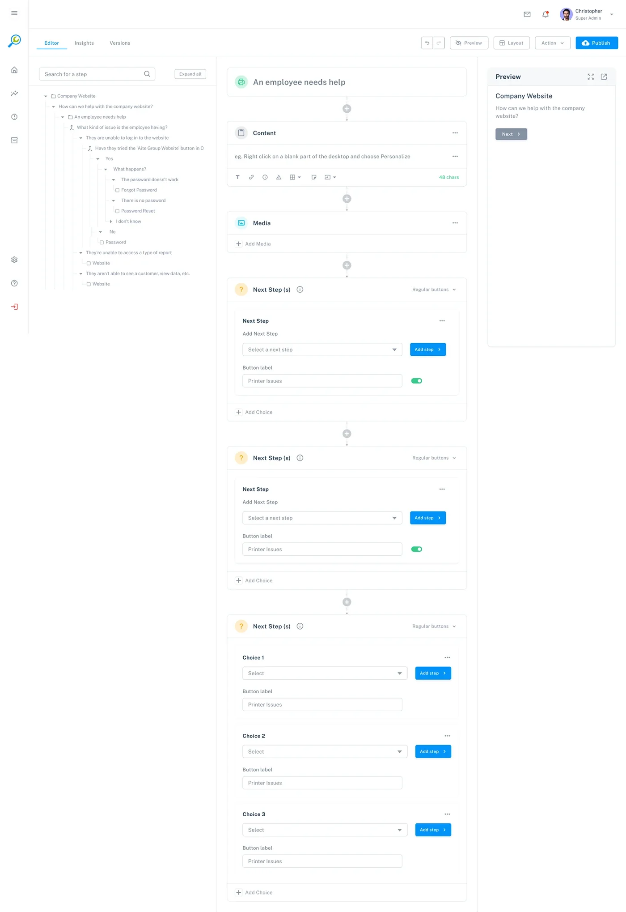
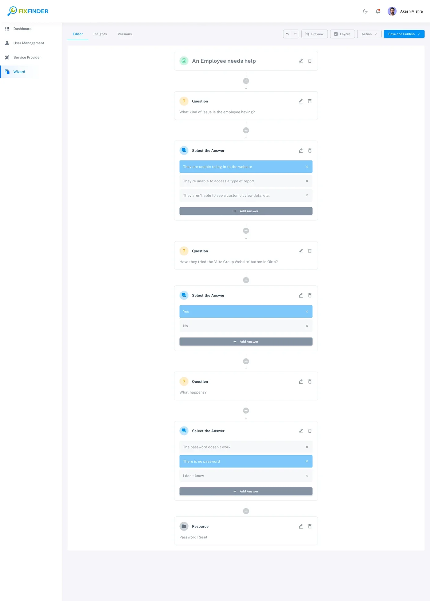
The authoring workspace shows a tree for context, a selected node for editing and a preview for the end-user experience. Next-step cards expose branching choices and button labels. The key design challenge is keeping structure, content and preview synchronized.
The registration screen provides the entry to the portal. Its relationship to specific user roles and access permissions should be verified before describing onboarding paths in detail.
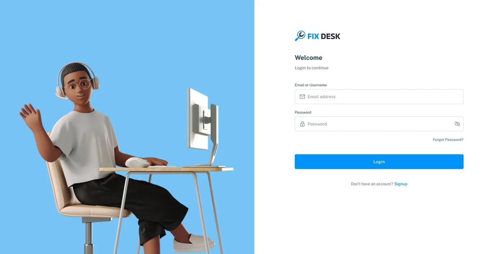
FixFinder needs a shared interface language across dashboards, directories, tables, wizard nodes, configuration panels and preview. The system should standardize common behavior while allowing domain-specific components.
Observed direction: white/light-gray surfaces, blue primary actions, cyan/green informational accents and amber/red status cues. Values shown are representative estimates, not exported tokens.
Establish a clear type scale for navigation, page titles, KPI values, table headers, metadata and wizard instruction content.
Use consistent panel spacing, table row height, card padding and grid alignment. The wizard needs responsive rules for tree, editor canvas and preview panels.
| Component family | Variants / states to define | Behavior contract | Evidence in screens |
|---|---|---|---|
| Application shell | Expanded/collapsed nav · active item · global actions | Keep module location, account and utility navigation predictable. | Dashboard and admin pages |
| KPI card | Default · trend · loading · unavailable | Show metric definition, timeframe and click destination. | Dashboard |
| Data table | Default · sorted · selected · empty · loading · error | Standardize search, sort, pagination, row actions and status. | Providers / resources / applications |
| Wizard node | Topic · question · answer · solution · resource · feedback | Show node type, content summary, parent-child relation and available actions. | Flow builder / tree |
| Branch / next-step card | Unconfigured · configured · invalid · connected | Make each answer choice's destination explicit and prevent orphan branches. | Configuration / next steps |
| Editor panel | Selected · edited · saving · saved · validation error | Keep selected tree node, editor content and preview synchronized. | Wizard editor |
| Preview panel | Initial · next-step · end state · broken branch | Render the end-user path based on the current draft. | Wizard content |
| Publish controls | Draft · ready · publishing · published · failed | Communicate live version, unsaved changes and publish result. | Wizard builder / editor |
Design-system evidence boundary: The screens demonstrate repeated visual patterns and component families. They do not prove a production Figma library, design tokens/variables, coded React component package, Storybook, versioning or engineering implementation. Add actual source/library evidence before claiming these deliverables.
The authoring tool is complex, and the employee-facing wizard should be simple. Accessibility and content quality should be built into both sides of the experience.
Maintain sufficient contrast, keyboard focus, readable labels and predictable navigation across tables, tree controls and canvas actions.
Use labels and node types with connectors; support keyboard alternatives to drag-and-drop and provide a linear tree view.
Questions should be mutually clear, answers concise and instructions actionable. Explain technical terms or avoid them in the employee-facing path.
Validate missing destinations, empty answers, cycles, unreachable nodes and unsaved changes before publish. Confirm destructive actions.
These are design and QA requirements, not proof of WCAG conformance or completed accessibility testing.
The key risks are whether authors can create valid branches and whether employees can follow them to a resolution. These tasks form a validation plan—not a report of completed usability tests.
| Test scenario | What to observe | Success signal | Priority |
|---|---|---|---|
| Create a password-reset wizard | Can an author create a topic, diagnostic question, answer and solution branches? | Creates a complete flow without losing hierarchy or leaving broken links. | Critical |
| Edit a branch in the tree | Can the author locate a node, edit it and understand where it leads? | Correct node is edited and preview reflects the change. | Critical |
| Preview as an employee | Can the author test each choice and reach the intended resolution? | All expected paths are reachable and content is understandable. | Critical |
| Save draft and publish | Can the author distinguish draft from live version and avoid accidental release? | Publish status and active version are unambiguous. | High |
| Find a service provider/resource | Can an admin search, filter and identify the right record? | Finds and opens the correct record without navigation errors. | High |
| Resolve an employee IT issue | Can an employee understand questions, follow instructions and escalate if needed? | Completes guidance or reaches support with context preserved. | Critical |
Measurement plan: Baseline wizard creation time, branch errors, unreachable nodes, preview-to-publish defects, employee self-service completion, escalation rate, repeat issue rate and helpfulness feedback. Set targets only after real task testing and product analytics. No such results were supplied in the archive.
The strongest supported story is the connection between service-operations visibility and structured self-service knowledge authoring.
DESIGN CONTRIBUTION
Organized KPIs, searched issues, best solutions/resources, client/device data and feedback into an admin dashboard.
Worked across provider, application and resource table/card views with search, pagination and record actions.
Structured content types—topics, questions, answers, solutions, resources and feedback—into an authoring model.
Used a visual flow model and tree-based editor to make decision paths visible and manageable.
Included configuration, preview, draft/save and publish affordances within the wizard workflow.
Identified shared table, card, navigation, node and state patterns across the product surfaces.
A self-service platform succeeds only when two experiences work together: the authoring experience must make it easy to build and maintain accurate support paths, and the employee experience must make those paths feel simple and trustworthy. The next design cycle should validate both sides together—not optimize the builder in isolation.
Impact integrity: Dashboard values such as 35 service providers, 5,600 active companies, 22,000 active computers and 632 tickets are sample values shown in the supplied interface. They are not measured results attributable to the redesign. No ticket-deflection, resolution-time, CSAT or adoption metrics were provided.